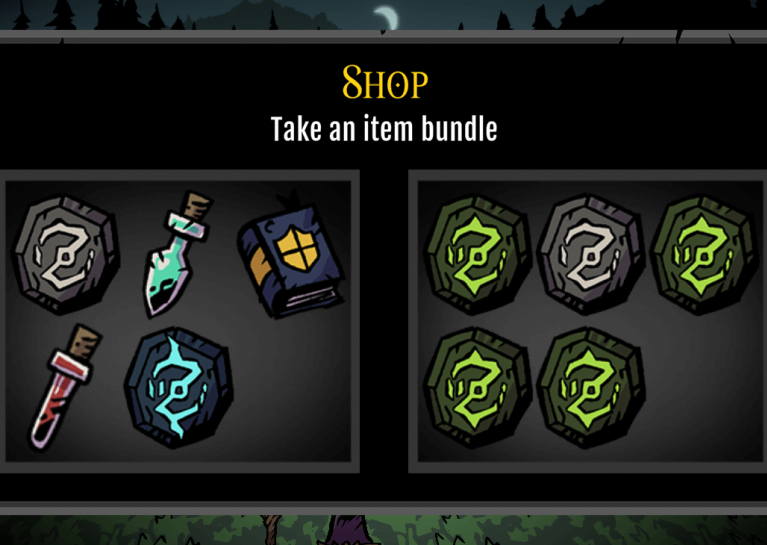
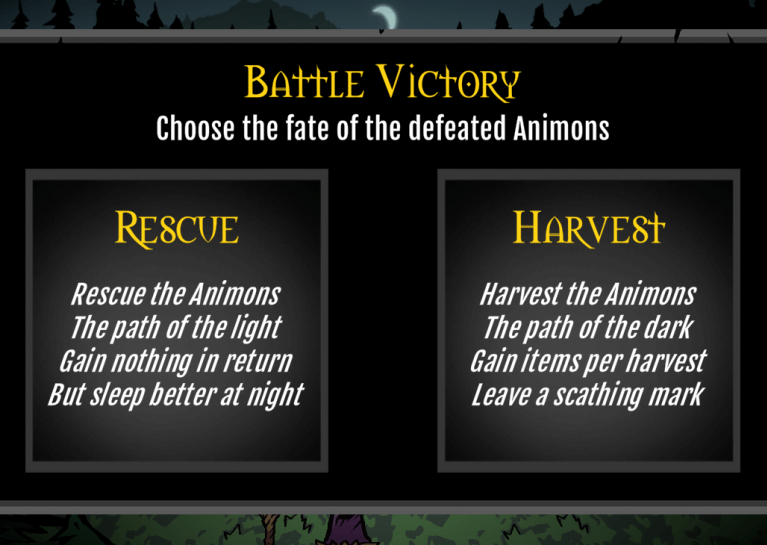
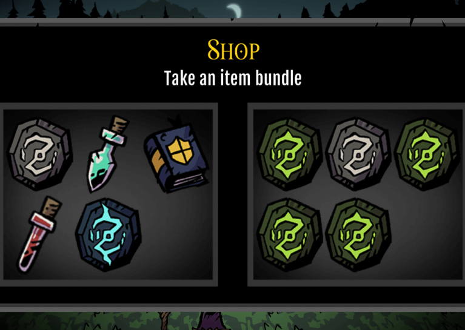
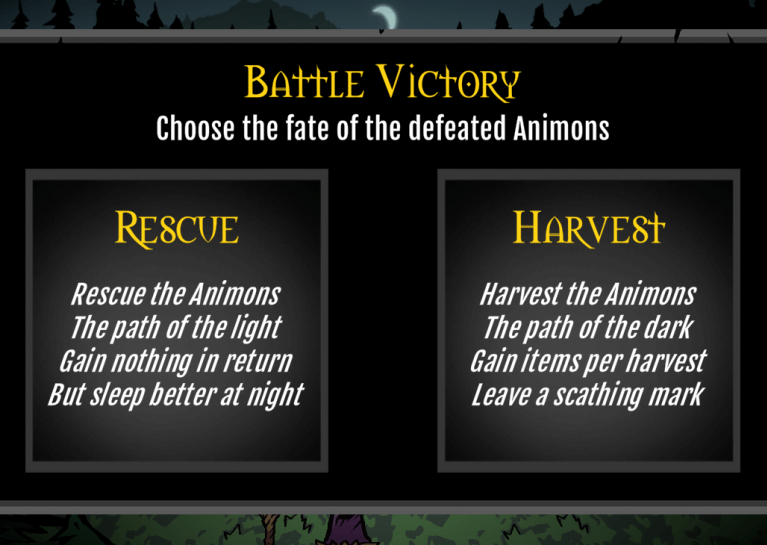

Social Media Website
Some Thoughts & Notes
This project is my graduation project for my undergraduate degree in Computer Science and its purpose is to demonstrate knowledge gained during the 4-years college education.- This project only runs locally because I did not have budget to buy server and domain to host it online.
- After two years, when I am creating this website(2022), I realized that there are a lot of things that can be improved in this project. For example: UI, and the backend framework used.
- Therefore, I decided recreate this project with SpringBoot and improve the UI. On one hand, I can learn more about the popular framework SpringBoot. On the other hand, to continuously improve my frontend skill. When it is done, I will try to deploy it and post a link here.


A full stack social-media type website
that serves as a platform for users to
share posts/thoughts only to people with
the same interest. This project was done by 2 members
Key features include:
- "Animon" is 2 puns in one, which may become obvious through repeated play.
- There are 2 versions of the game -- Radiant Dark and Stygian Light -- with different starting conditions.
- There are 2 worlds -- dark and light -- that switch depending on choices that you make. Each world has its own art, music, special locations, and exclusive monsters.
- You are given 2 choices at many points in the game -- recruiting monsters at a stable, taking item bundles at a shop, deciding what to do with defeated monsters, etc.
- Each monster has 2 stages -- base and evolved.
- Each elemental type is effective against 2 others and ineffective against 2 others.
Unzip the package, double-click the AnimonJam.exe to run the game. Alt+F4 to exit the game.
•••• Watch the video for a full playthrough ••••
When you start the game, click on one of the nodes in front of you to progress forward. Each node will trigger a different event.
When you enter combat, you may perform these actions
1) Use abilities, consuming your limited supply of mana each turn
2) Use items
3) Switch to a backup Animon. Be careful, you can only do this at the start of your turn and will cost you the entire turn!
4) End turn. Make sure you use up all your mana before you pass to the enemy!
•••• Watch the video for a full playthrough ••••
Credits:
David Or(madestream.com): - Game Design, Dev Lead, Map & Systems Programming, Project Management, Writing
Romer Chia(rockmex): - UI Programming, Gameplay Balance, Audio
 


